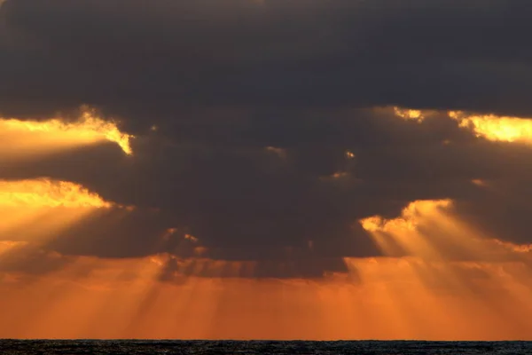

Pourquoi voit-on un éventail de rayons du Soleil, même avec un Soleil à 150 millions de km ?
Explorer
Vue extérieure —
Observateur et focale visibles
Projection orthographique
Explication de la perspective et de la focale
traverse proche
traverse lointaine
vitre = écran
œil
Recul de l'œil
Focale (œil → vitre)
Traverse proche
Traverse lointaine
Proche ÷ lointaine
Rayons crépusculaires
Pourquoi un éventail, si le Soleil est à l'infini ?
Le Soleil
Azimut ↔
L'atmosphère
Poussières
Altitude du nuage
Caméra
Focale
Garder le cadrage
(travelling compensé)
Distance au centre du nuage
Hauteur au sol
Horizon